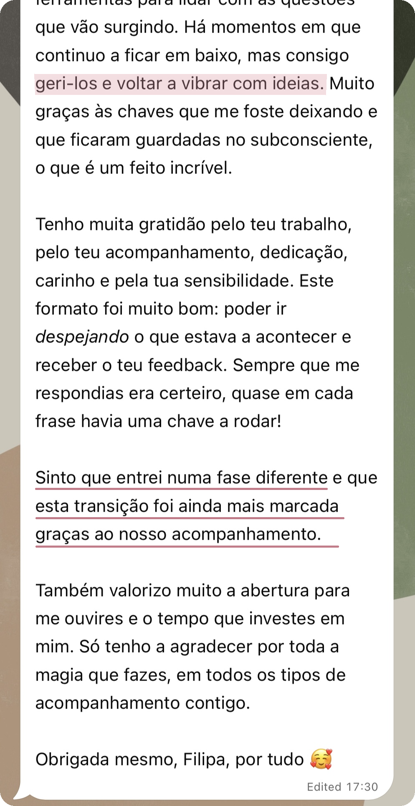

"Transformam dúvidas em clareza, desalinhamento em alinhamento e confusão mental em clareza."
— mensagem transcrita de um áudio de uma cliente


Uma nova forma de te veres a ti, ao teu negócio e de escolheres como queres ser vista ou visto
A CEEN é um processo individual para ti, que já tens um negócio e sentes que algo na forma como está construído, comunicado ou vivido precisa de evoluir na tua nova fase.
Podes chegar com uma decisão, uma dificuldade, um desejo ou a sensação de que as diferentes partes do teu negócio já não formam uma direção coerente. Partimos daí para ligar o que está disperso ou confuso e transformar essa leitura em novas perspetivas, recomendações concretas e possíveis movimentos alinhados com quem és agora.
Enquanto te escuto, presto atenção à forma como falas sobre as diferentes áreas do negócio, ao que te entusiasma ou retrai, ao peso que atribuis a determinadas decisões e às contradições que possam surgir. É também aqui que se tornam visíveis crenças e padrões que influenciam as tuas escolhas, mesmo quando ainda não os reconheces.
O negócio é o centro da CEEN, mas não é observado separadamente de ti.
A tua identidade, energia, capacidade, desejos e momento de vida ajudam-nos a reconhecer o que ainda te representa e como queres continuar a trabalhar e evoluir.
A CEEN é pensada para pessoas que transformam o seu conhecimento, experiência ou prática profissional em serviços, cursos, produtos e infoprodutos.
És uma parte central daquilo que vendes e comunicas: as pessoas procuram o teu olhar, a tua forma de trabalhar e o valor que sabes criar. Por isso, rever a oferta, o posicionamento ou a forma de crescer toca também na maneira como te reconheces e queres ser reconhecida/o.
Talvez tenhas várias competências e possibilidades e precises de perceber quais queres reunir na tua próxima direção coerente, sem sentires que tens de transformar tudo o que sabes numa oferta ou continuar a vender aquilo que já não desejas entregar.
Talvez sucesso profissional signifique, para ti, crescer, aumentar o rendimento ou chegar a mais pessoas. Talvez signifique ter mais tempo livre, mais autonomia, reconhecimento, impacto ou realização. Ou talvez seja tomar decisões com confiança, relacionar-te com o teu trabalho com mais leveza e deixares de viver certas questões profissionais com tanto desgaste emocional.
Podes já ter alcançado resultados que, para ti, representaram sucesso e, ainda assim, sentir que a forma como trabalhas hoje deixou de te representar. Isso não retira valor ao que construíste. Pode apenas indicar que chegou o momento de o reformular para acompanhar a tua evolução.
Na CEEN, não partimos do princípio de que existe algo de errado contigo ou com o teu negócio, nem de que existe uma versão ideal à qual deverias corresponder ou uma fórmula de sucesso que deverias seguir. A melhor estratégia é a que se adequa a ti!
Podes querer alcançar novos resultados e, ao mesmo tempo, mudar a forma como os estás a construir. Estas duas necessidades podem fazer parte do mesmo momento do negócio:
RESULTADOS E DIREÇÃO
COMO ESTÁS NO NEGÓCIO
Nem todas as dificuldades se resolvem com uma nova estratégia.
Por vezes, a dificuldade em cobrar, delegar ou comunicar está também ligada ao que essa decisão significa para ti, não apenas à falta de um plano.
Na CEEN, ligamos as decisões de negócio à pessoa que és e ao que estás a viver, porque cada escolha é também influenciada pelo que desejas, pelo que receias e pelo que estás disponível para sustentar.
A clareza não faz a mudança por ti, mas pode encurtar o tempo que passas a insistir numa direção que te esgota, a adiar decisões ou a tentar resolver apenas no negócio aquilo que também precisa de ser reconhecido em ti.
O espelho representa uma parte essencial da CEEN: quando estás dentro do negócio, essa proximidade pode dificultar ver com clareza o que está a orientar as tuas escolhas. O meu olhar externo, estratégico e profundo, devolve-te as palavras que escolhes, aquilo que repetes, as contradições que surgem e a forma como falas sobre as diferentes possibilidades.
Rever a oferta é também reconhecer o que já não te representa
Esta cliente chegou à sessão convencida de que queria continuar a apostar em determinados serviços. Racionalmente, pareciam-lhe as opções mais seguras e aquelas que faziam mais sentido manter.
Através das perguntas que lhe coloquei e das devoluções sobre a forma como falava de cada um dos serviços, foi a própria cliente que reconheceu que aquilo que acreditava que "deveria" manter já não correspondia ao que realmente queria desenvolver.
Decidiu concentrar a oferta e a comunicação nos serviços que continuavam a despertar o seu entusiasmo e, depois dessa mudança, voltou a gerar vendas.
"Nunca ninguém tinha olhado para o meu negócio desta forma!"
— comentário da cliente durante a sessão
O negócio já não estava a gerar vendas como antes e a cliente distribuía a sua atenção por vários serviços. Alguns pareciam-lhe opções seguras e, por isso, acreditava que queria continuar a apostar neles.
À medida que falava sobre cada serviço, fui colocando perguntas e devolvendo-lhe diferenças, tensões e contradições que surgiam na forma como os descrevia.
Estas devoluções não serviram para lhe dizer quais deveria manter ou deixar. Funcionaram como um espelho para que pudesse reconhecer, por si própria, que alguns serviços eram sustentados sobretudo pelo hábito, pela segurança e pela ideia de que deveriam continuar por já fazerem parte do negócio.
Essa diferença ainda não era clara para ela antes da sessão.
A cliente distinguiu os serviços que acreditava que "deveria" manter daqueles que queria verdadeiramente continuar a desenvolver.
Decidiu concentrar a oferta e a comunicação nestes últimos e, depois dessa mudança, voltou a receber pedidos e a gerar vendas.
A CEEN não escolheu por ela. Ajudou-a a ver com clareza para poder escolher.
Na prática, a CEEN cruza duas dimensões: o que orienta as tuas escolhas e a forma como essas escolhas se traduzem no negócio.
DIMENSÃO ENERGÉTICA ·
A PESSOA QUE O CONDUZ
Reconhecer o que te mobiliza, retrai ou esgota e como isso influencia as tuas escolhas e o papel que desejas ocupar no negócio.
Consoante o que for mais relevante no teu momento, podemos observar a tua energia natural, desejos, crenças e padrões: elementos que influenciam aquilo que escolhes, comunicas e consegues sustentar.
DIMENSÃO ESTRATÉGICA ·
A TRADUÇÃO NO NEGÓCIO
Traduzir essa leitura em critérios, prioridades e recomendações concretas para a próxima fase do negócio.
Consoante a questão ou a profundidade do trabalho, podemos observar ofertas, serviços, preços, posicionamento, comunicação, conteúdos, páginas de vendas, website, formatos de entrega, responsabilidades e decisões do dia a dia.
Observar sem estruturar pode trazer mais consciência, mas deixar-te sem saber o que fazer com ela. Estruturar sem observar pode levar-te a escolher uma estratégia que não consegues ou não desejas sustentar. É neste diálogo entre energia e estratégia que a CEEN acontece.
Se quiseres aprofundar a abordagem, abre os temas abaixo: como as áreas do negócio se influenciam e como a tua energia entra nas decisões profissionais.
Olhar para o negócio como um sistema é observar, em simultâneo, a pessoa que o conduz, a identidade que o orienta, a estrutura que o sustenta, as relações que cria e as trocas que tornam possível a sua continuidade.
Consoante o teu momento, podemos observar:
Estas dimensões influenciam-se mutuamente: uma mudança no posicionamento pode pedir outra oferta; uma alteração na oferta pode transformar a comunicação e a entrega; e uma nova fase de crescimento pode exigir outra estrutura ou diferentes responsabilidades.
Trabalho e dinheiro estão relacionados, mas não são a mesma coisa. Mais esforço, mais horas ou maior disponibilidade não se traduzem automaticamente em mais rendimento. O crescimento não é verdadeiramente sustentável se aumentar os resultados à custa do teu tempo, da tua vontade ou da tua vitalidade.
Esta visão não serve para criar explicações fechadas. Ajuda-nos a formular hipóteses, reconhecer relações e perceber o que faz sentido criar, manter, reorganizar ou transformar.
Na CEEN, energia pessoal não significa apenas disposição ou cansaço. É a disponibilidade que resulta da interação entre dimensões físicas, mentais, emocionais, sociais e subtis e que influencia a tua capacidade de criar, decidir, relacionar-te e assumir responsabilidades.
Uma decisão profissional não depende apenas da análise racional. Também é influenciada pelo que sentes que podes ganhar, perder, provar ou proteger através dela. Por exemplo:
Na CEEN, estes elementos são sempre relacionados com a realidade concreta do negócio e com as escolhas que tens pela frente. Desta forma, aproximamos estratégia, marketing, identidade e intenção.
A CEEN não substitui consultoria técnica nem execução especializada. Podemos observar ofertas, preços, comunicação, páginas de vendas ou decisões e identificar relações e possíveis alterações. Não estão incluídas auditorias técnicas aprofundadas, planeamento integral, copywriting ou implementação feita por mim.
O meu papel é escutar, questionar, formular hipóteses, ligar pontos e apresentar recomendações concretas. As decisões finais continuam a ser sempre tuas.
"Transformam dúvidas em clareza, desalinhamento em alinhamento e confusão mental em clareza."
— mensagem transcrita de um áudio de uma cliente

Tenho formação em Gestão, Controlo de Gestão, Negócios Internacionais e Estratégia, em instituições de ensino de referência, e experiência nas áreas financeira e de gestão em empresas portuguesas de grande dimensão.
Nos últimos anos, aprofundei o estudo do comportamento humano, da identidade, da infância, das crenças e dos padrões inconscientes, bem como da linguagem simbólica através da qual o inconsciente se expressa. Aprofundei também a visão sistémica aplicada às relações, à liderança e aos negócios.
Este percurso foi consolidado através do acompanhamento de clientes nos seus processos de autoconhecimento, a compreender crenças e padrões que as afastam de si e a aproximarem-se da sua essência, na forma como se veem, escolhem e vivem.
Hoje, junto estas duas vertentes numa prática que combina capacidade de análise e escuta atenta, com clareza, sensibilidade e frontalidade, e um olhar que vai além.
↑ Voltar a explorar a CEEN desde início"Tu consegues tão bem captar, dirigir, interpretar e transformar em palavras, em orientações, em conselhos, em sugestões e em reflexões em conjunto."
— feedback de uma cliente num áudio durante o seu acompanhamento comigo
Esta forma de trabalhar pode fazer sentido para ti se…
Podes trabalhar comigo através de uma Sessão CEEN, dedicada a uma questão concreta, ou através do Ciclo CEEN, para relacionar e reorganizar as áreas do negócio mais relevantes.
Em qual destas te revês mais agora? Escolhe uma:
Uma questão concreta
Várias áreas interligadas
Isto soa a uma questão concreta — o formato pensado para isto é a Sessão CEEN. Aqui tens como funciona:
Ver como funciona a Sessão CEENIsto parece atravessar várias áreas ao mesmo tempo — o formato pensado para isto é o Ciclo CEEN. Aqui tens como funciona:
Ver como funciona o Ciclo CEENNão precisas de começar por uma Sessão CEEN para chegares ao Ciclo CEEN. Se já reconheces que a questão atravessa várias áreas, podes marcar diretamente a leitura integrada.
Antes da sessão, partilhas a questão que queres trabalhar e o contexto essencial. Quando for relevante, podes também enviar um material principal, por exemplo, uma página de vendas, uma tabela de preços ou a descrição de uma oferta. Faço uma leitura breve para chegar ao encontro com o enquadramento necessário.
Partimos da questão que trouxeste mais estratégica, prática ou relacionada com a forma como estás a viver o negócio. Escuto, questiono, devolvo-te o que reconheço, ligo os diferentes pontos e apresento-te novas perspetivas e recomendações concretas durante o encontro.
A leitura, a reflexão e as recomendações são trabalhadas durante a sessão. Depois, podes avançar autonomamente ou marcar uma nova Sessão CEEN quando outra questão concreta pedir atenção. Não estão incluídos relatório, análise posterior, implementação, revisão de novos materiais ou acompanhamento assíncrono.
Uma sessão individual online de até duas horas. Olhamos para a estrutura atual do negócio, para a forma como estás a vivê-lo, para as diferentes áreas que se influenciam e para aquilo que está a pedir uma revisão mais profunda.
Podes acrescentar exemplos, materiais, acontecimentos ou informação que tenha surgido depois da conversa e seja relevante para completar a leitura.
Revejo os materiais relevantes, relaciono as diferentes áreas do negócio, formulo hipóteses e preparo melhorias e recomendações. Durante este período, posso colocar-te perguntas dirigidas ou pedir esclarecimentos necessários à análise.
Organizo a leitura do momento, as relações entre as áreas analisadas, as decisões importantes, as prioridades e os movimentos que considero mais adequados à próxima fase do negócio.
Apresento-te a proposta, explico as ligações que estabeleci e discutimos a direção. Depois, integro no Notion os pequenos ajustes definidos durante o encontro.
NA SESSÃO CEEN
NO CICLO CEEN
"Sinto que ganhei muito mais consciência e ferramentas…"
Neste testemunho, a cliente descreveu o que mudou quando passou a ter mais consciência, ferramentas e apoio para lidar com aquilo que ia surgindo no seu processo de negócio:


Sessão CEEN
250 €
Uma sessão individual de até duas horas dedicada a uma questão concreta, no negócio ou em ti, enquanto pessoa que o conduz. Inclui uma leitura breve do contexto e, quando exista, do material principal, bem como o trabalho de análise, reflexão e direção durante a sessão.
Ciclo CEEN
800 €
Duas sessões individuais e um trabalho de análise personalizada entre os encontros, para relacionar as áreas do negócio mais relevantes para o teu momento.
A partir do que partilhas e dos materiais analisados, preparo uma leitura integrada, prioridades, recomendações concretas e uma proposta de reorganização no Notion. Na segunda sessão, apresento-te essa proposta, explico as ligações que reconheci e alinhamos a direção.
O investimento inclui este trabalho de análise, preparação e entrega.
"Ter alguém ao meu lado que olha para mim e para o meu negócio como um todo."
É no contacto com a experiência real que novas decisões, dúvidas e possibilidades se tornam visíveis. Este é o testemunho de outra cliente sobre o que tem vivido no seu processo comigo:


Podes regressar à CEEN sempre que precisares
Depois de uma Sessão ou do Ciclo, podes avançar autonomamente ou marcar uma nova Sessão CEEN quando surgirem decisões, dúvidas ou mudanças que queiras trabalhar comigo. Não precisas de definir antecipadamente um percurso nem um número fixo de sessões.
Se reconhecer que o processo beneficiaria de um acompanhamento mais próximo entre sessões, poderei propor-te uma Travessia CEEN: um período definido para partilhares o que surge e receberes o meu olhar ao longo da experiência.
É um formato exclusivo, proposto depois de conhecer a pessoa, o negócio e o momento que está a viver. Não está disponível para marcação direta 🔒
Não. O negócio pode estar numa fase inicial, em crescimento ou em reorganização, mas precisa de já estar em funcionamento e em contacto com a realidade. É importante que existam ofertas, preços, comunicação, clientes, vendas ou tentativas de venda e decisões concretas que possamos observar.
Não. A CEEN não substitui apoio técnico de gestão, marketing, finanças, contabilidade ou operação. Também não inclui auditorias técnicas, copywriting ou implementação feita por mim. Cruzo o que observo em ti e no negócio com os meus conhecimentos de estratégia e marketing para apresentar possibilidades, critérios e recomendações ajustadas.
Sim, desde que esteja relacionada com a forma como estás a viver, decidir ou ocupar o teu lugar no negócio. Podemos trabalhar identidade, crenças, padrões, receios, visibilidade, dinheiro ou responsabilidade quando estiverem a influenciar as tuas escolhas profissionais.
A Sessão CEEN não é terapia: a pessoa pode ocupar o centro da sessão, mas o negócio e as decisões profissionais continuam a oferecer-nos o contexto.
Não. A dimensão energética está relacionada com aquilo que estás concretamente a viver e que nem sempre é imediatamente visível: atenção, emoções, crenças, hábitos, capacidade e respostas do corpo. Usamos apenas aquilo que fizer sentido para ti.
Vou ajudar-te a reconhecer aquilo que pode não estar claro, apresentar recomendações e sugerir possíveis direções. Não decido nem ajo por ti: as decisões finais e as ações concretas continuam a ser tuas.
Se consegues delimitar uma questão, no negócio ou na forma como o estás a viver, a Sessão CEEN pode ser suficiente. Se a questão atravessa várias áreas e precisas de compreender como se relacionam, o Ciclo CEEN será provavelmente mais adequado.
Não. Podes marcar diretamente o Ciclo CEEN quando já reconheces que precisas de relacionar e reorganizar várias áreas do negócio.
Trabalhamos o que for possível dentro do âmbito da sessão. Se reconhecer que a questão está ligada a várias áreas, explico-te porquê e posso recomendar o Ciclo CEEN. A decisão de avançar continua a ser tua.
Não. A leitura do contexto é breve e acontece antes do encontro quando necessário. A análise, as recomendações e as decisões são trabalhadas durante a sessão. Não estão incluídos relatório, implementação nem acompanhamento posterior.
O Ciclo CEEN não inclui acompanhamento contínuo. Entre as sessões, tens três dias para acrescentar informação relevante. Durante a análise, posso colocar-te perguntas dirigidas ou pedir esclarecimentos para preparar a proposta. Estes contactos servem para completar a leitura, não para acompanhar a implementação ou responder continuamente às questões do dia a dia.
Depois da segunda sessão, integro no Notion os pequenos ajustes definidos no encontro e a entrega do Ciclo fica concluída. Podes então avançar autonomamente ou marcar uma nova Sessão CEEN para trabalhar outra questão concreta.
Se reconhecer que o processo beneficiaria de acompanhamento mais próximo, poderei propor-te uma Travessia CEEN. É um formato distinto, não incluído no Ciclo, e não está disponível para marcação direta.
Uma questão concreta? Escolhe a Sessão CEEN.
Várias áreas para rever em conjunto? Escolhe o Ciclo CEEN.
Ainda tens dúvidas sobre qual é o formato mais adequado?
Envia-me uma mensagem e conta-me brevemente o que desejas observar.
Apenas 3 vagas em outubro